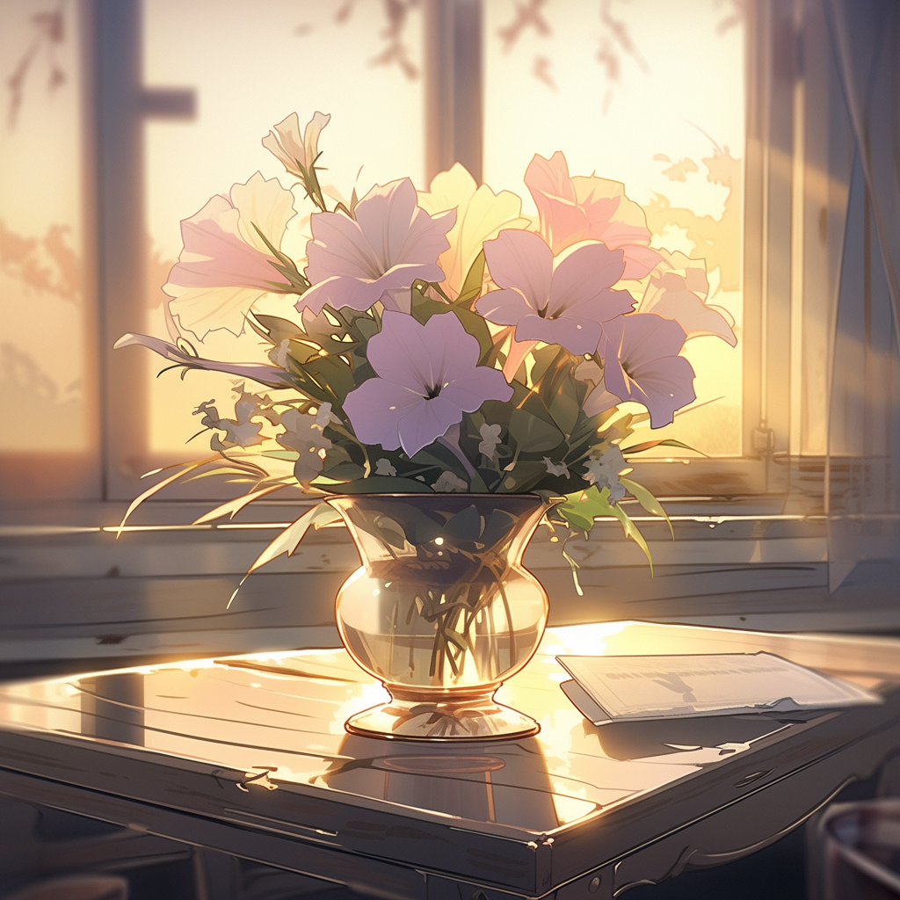

Wild Flowers
Beauty Thriving in Nature

What are wildflowers?
Wildflowers are flowers that are found in places such as forests or
fields, rather than in a yard or garden. Typically, they are native
to wherever they are bloomming. Native plants are important to our
ecosystem. They play roles that support our everyday lives, such as
providing us with food or helping to cycle toxic elements from our
environment.
Common Wildflowers

Yellow, daisy-like flowers that bloom in the southeastern
United States. They bloom in spring to early summer, and
attract many critters, including butterflies, long-tongued
bees, and moths.

Also known as bergamot, bee balm is a plant that is native to
North America. Like its name suggests, it attracts bees! They
are perennial, and should be planted in the spring and fall.

These vibrant purple flowers are native to several places,
including Canada and southern areas of the United States. They
are of the sunflower family, and thrive in alluvial and
alkaline soil.
Blooming Timelapse Videos